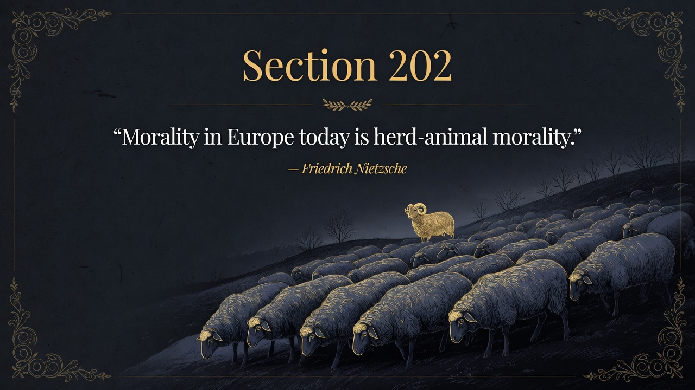
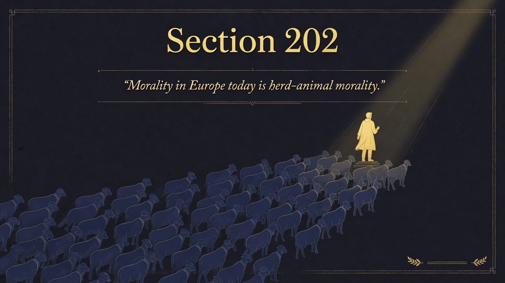
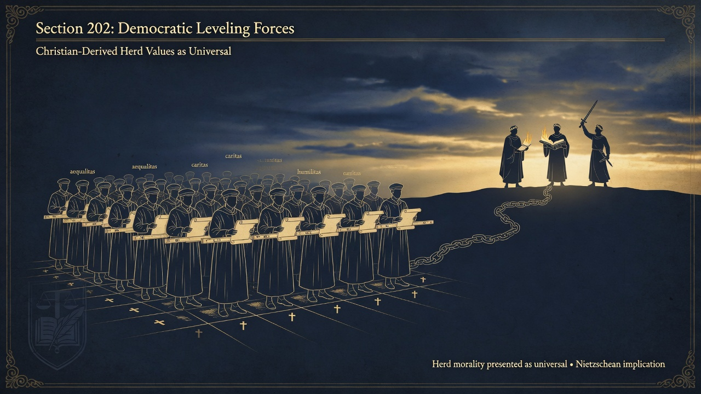

Part Five: On the Natural History of Morals • Beyond Good and Evil
European morality today is herd morality pretending to be the only morality that exists. Nietzsche insists higher moralities are possible before, beside, and after it. The dominant code refuses to see itself as just one option.
Section 202 delivers the central thesis of Part Five: “Morality in Europe today is herd-animal morality—in other words, as we understand it, merely one type of human morality beside which, before which, and after which many other, above all higher, moralities are, or ought to be, possible.” The dominant European morality refuses to acknowledge its own relativity. It presents itself with stubborn insistence as “morality itself, and nothing else is!”
Nietzsche traces this universalizing tendency to Christianity’s doctrine of the equality of souls before God, now secularized in the democratic movement. What was once a religious faith in the equal worth of every soul has become the instinctive political and moral conviction of the age. The result is a morality that systematically weakens the instincts that produce exception, rank, and self-overcoming. It favors the average, the harmless, the sociable, and treats any strong differentiation as injustice or cruelty.
The section warns that a single morality which mistakes itself for the only possible or desirable one is dangerous for the future. By making the present live at the expense of the future, it narrows the range of human types and possibilities. Higher moralities require different valuations—valuations that do not automatically equate the good with what is useful or comfortable for the greatest number. The free spirit sees that the “herd” is a type, not the human as such, and that its morality is a particular adaptation, not a universal law.
the most powerful force in modern Europe is not an overt ideology but an unconscious moral consensus that equates goodness with the absence of danger, difference, and rank. This consensus is inherited, not chosen, and it actively resists any revaluation that would restore the possibility of noble types.
In an era of globalized democratic values, corporate DEI initiatives, therapeutic culture, and social media-enforced conformity, the claim that one moral framework is simply “morality” itself remains pervasive. Calls for equity that flatten excellence, content moderation that protects feelings at the expense of truth, and political rhetoric that treats hierarchy or ambition as inherently suspect all continue the herd logic. Nietzsche’s challenge remains urgent: can we admit that our reigning morality is only one possible form and make room—intellectually and culturally—for higher, more demanding, more life-affirming moralities? The alternative is a slow, comfortable decline into the universal mediocrity that fears nothing because it has leveled everything. ~340 words. Faithful to Kaufmann translation and Part Five context.


